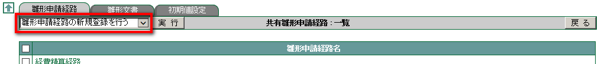
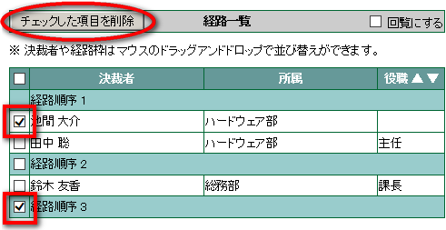
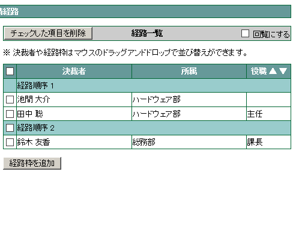
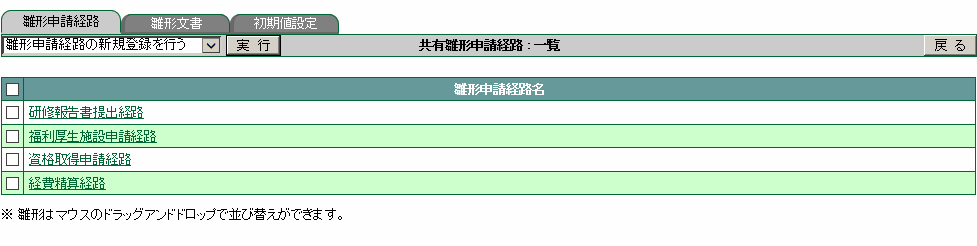
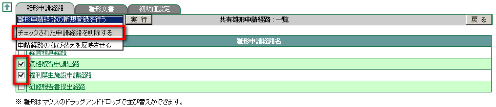
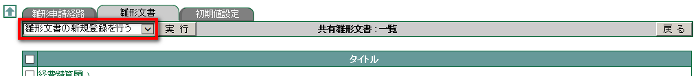
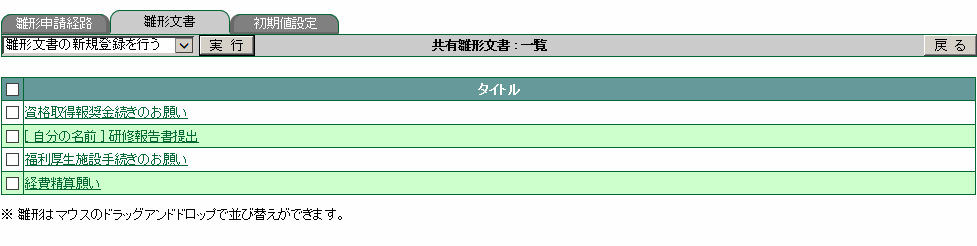
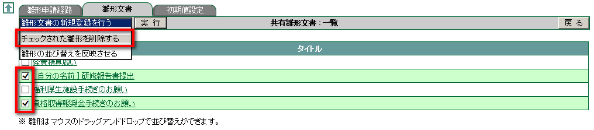
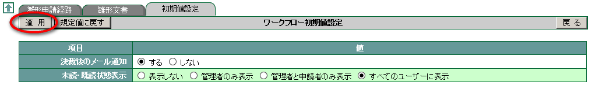

9. ワークフロー¶
9.1. 雛形申請経路¶
共有したい申請ルートをあらかじめ登録しておきましょう。
9.1.1. 共有雛形の経路を登録する¶
メニューの
 をクリックします。
をクリックします。ワークフロー
 をクリックします。
をクリックします。プルダウンメニューより [雛形申請経路の新規登録を行う] を選択し、 実行 をクリックします。

「雛形申請経路名」を入力します。
次に「申請経路」を設定します。[ユーザ一覧] から経路に追加したいユーザを選択☑ し、 経路に追加 をクリックします。

経路の順序を変更したい場合は、[経路一覧] のユーザを変更したい順序の [経路順序] へドラッグ & ドロップします。

入力が完了したら、 OK をクリックします。
Note
[経路一覧] からユーザを削除したい、または余分な経路枠を削除したい場合は、項目を選択☑ し チェックした項目を削除 をクリックします

Note
経路枠を追加したい場合は 経路枠を追加 をクリックします

Note
回覧の経路にする場合は、「回覧にする」を選択☑ します

9.1.2. 雛形の並び順を変更する¶
メニューの
をクリックします。ワークフロー
をクリックします。経路の順序を変更したい場合は、並び変えたい箇所へドラッグ & ドロップします。

9.1.3. 削除する¶
メニューの
をクリックします。ワークフロー
をクリックします。削除したい雛形を選択☑し チェックされた申請経路を削除する を選択し 実行 をクリックします。

確認メッセージが表示されたら OK をクリックします。
9.2. 雛形文書¶
共有したい申請ルートをあらかじめ登録しておきましょう。
9.2.1. 共有雛形の文書を登録する¶
メニューの
をクリックします。ワークフロー
をクリックします。[雛形文書] タブをクリックし、 プルダウンメニューより [雛形申請経路の新規登録を行う] を選択し、 実行 をクリックします。

「タイトル」に文書のタイトルを、「雛形文書」に本文となる文章を入力して OK をクリックします。
9.2.2. 雛形の並び順を変更する¶
メニューの
をクリックします。ワークフロー
をクリックします。[雛形文書] タブをクリックし、 雛形文書の順序を変更したい場合は、並び変えたい箇所へドラッグ & ドロップします。

9.2.3. 削除する¶
メニューの
をクリックします。ワークフロー
をクリックします。削除したい雛形を選択☑し [チェックされた雛形を削除する] を選択し 実行 をクリックします。

確認メッセージが表示されたら OK をクリックします。
9.3. 初期値設定¶
ワークフローに関する初期値を設定する
メニューの
をクリックします。ワークフロー
をクリックします。[初期値設定] タブをクリックし、「決裁後のメール通知」「未読・既読の状態表示」の設定値をそれぞれ選択します。

適用 をクリックします。
Note
- 「決裁後のメール通知」を する に設定すると、ワークフローが届いたらその旨をメールで通知します。
- 「未読・既読の状態表示」は 経路にいるユーザが当該ワークフローを読んだかどうかの状態を、詳細画面で表示するかどうかの設定です。
- 値を規定値に戻したい場合は、 規定値に戻す をクリックします。